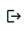
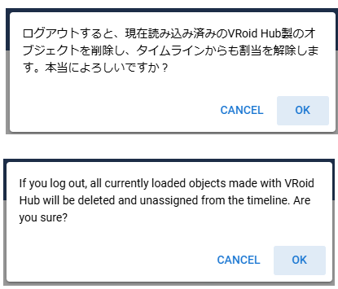
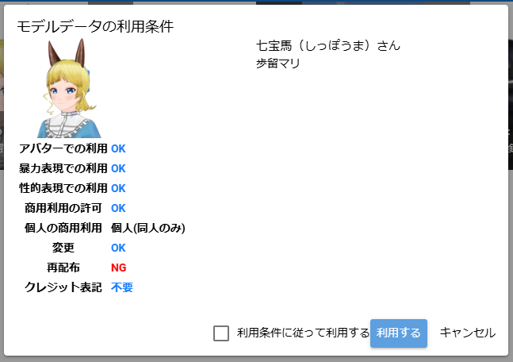

21. VRoid Hub
21.1. Connecting to VRoid Hub
From version 2.11.0, it is now possible to load VRM from VRoid Hub.
Please register for a VRoid Hub account in advance.
- VRoid Hub:
Open the
3D Modeltab on the ribbon bar of this app.
Press the
Connectbutton in the VRoid Hub area.
- For web apps
This app will redirect you to the VRoid Hub website.
Log in to VRoidHub and allow the connection between this app and VRoid Hub.
After logging in, the app screen will be displayed again.
The connection between this app and VRoid Hub will be completed.
- For each OS version
A pop-up dialog will appear with a button to log in to VRoid Hub, so click it to open it in your browser.
Log in to VRoidHub and allow the connection between this app and VRoid Hub.
You will be shown a code on the web page, please copy it.
Look at the app screen again.
Next, a box for entering the code will appear, so paste the code you copied and press the submit button.
The connection between this app and VRoid Hub will be completed.
Hint
This app does not store the user’s VRoid Hub login information. Due to the specifications of VRoid Hub, even if you connect to this app once, the connection will be automatically disconnected after a few minutes.
In that case, you will need to reconnect.
21.2. Logging out of VRoid Hub
Open the
3D Modeltab on the ribbon bar of this app.
Press the
Logoutbutton in the VRoid Hub area.
A confirmation message will be displayed. If there are no problems, press the OK button.
Caution
When you log out, the following will happen:
All currently loaded VRM files opened from VRoid Hub will be deleted from the current project.
However, the Timeline (role) will remain. The registered keyframe contents will also remain, so you can open another VRM later, assign it to the Timeline (role), and play the motion.
See Assign Cast to Role.
Also, VRM opened from VRoid Hub will not be saved in the history.
If you want to use a model immediately, you can download it directly from VRoid Hub, save it on your PC, smartphone, or Google Drive, and then use it in this app.
21.3. Loading a model from VRoid Hub
Once the connection is successful, you can browse the following types of models from the list menu:
My registered models
Favorite Models
Model recommended by staff
Clicking (tapping) on a model will display a check mark to select it. Then, pressing the OK button will display a confirmation message, so you can proceed.
21.3.1. Using the model
After that, the VRM information screen will be displayed, just like when loading from a device, and you can check the license and terms of use.
Due to the terms of use for VRoid Hub, some items in this dialog may differ from the VRM metadata.
Hint
If you register a model yourself, the terms of use dialog will not be displayed; only a simple confirmation message will be displayed.
21.3.2. Continue loading the list
If you want to reload the rest of the list, press and the rest of the list will be loaded.
Caution
Models recommended by our staff appear randomly. Many of the models do not have the correct information set in the meta information inside the VRM, and may behave unexpectedly in this app.
Please use models recommended by our staff at your own risk.